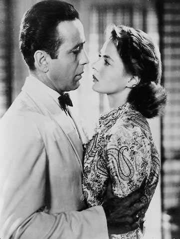
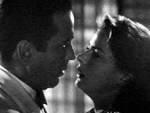
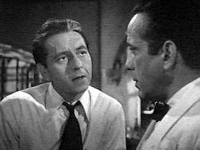
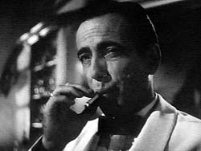

|

Texto de
Susana
Lopes de Alexandria

Ttulo
foi tirado de "Casablanca" (7)

|
No escritrio de Rick, Ilsa implora para que ele salve seu marido, vendendo-lhe os salvo-condutos. Depois conta o que aconteceu em Paris: quando conheceu Rick, achava que estava viva, pois recebera a notcia de que Laszlo havia morrido num campo de concentrao.  Na ocasio, no disse nada a Rick sobre seu casamento por questo de segurana. Se a Gestapo soubesse que ela era casada com um dos maiores lderes antinazistas, estaria correndo o risco de ser presa.
No dia em que Ilsa e Rick iriam deixar Paris, ela ficou sabendo que o marido estava vivo, doente e precisando dela. Ela no teve coragem de contar isso a Rick e dizer que no partiria com ele, pois com certeza Rick teria ficado em Paris por sua causa e estaria, ele tambm, correndo o risco de ir parar num campo de concentrao.  Mas Ilsa diz que o destino fez com que se encontrassem de novo em Casablanca, que ela admirava o marido, mas ainda amava Rick e desta vez no teria coragem de deix-lo. Neste instante, ouvem um barulho no andar de baixo do bar.   Victor Laszlo, que se escondeu no Rick's Caf para no ser pego pela polcia, que havia descoberto a reunio clandestina da resistncia francesa. Victor nem desconfia que a mulher estava no andar de cima (Rick j havia pedido para um empregado do bar lev-la para casa), mas diz claramente a Rick que sabe do amor que ele sente por sua esposa, e que por isso que ele no deseja v-la partir de Casablanca. Neste momento, a polcia arromba a porta do bar e prende Laszlo. Rick nada faz para defend-lo. |